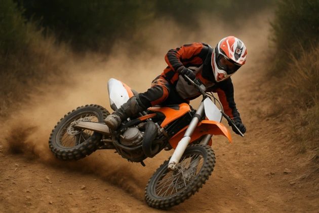

The Dirt Bike Years

Dedicated to the riders who survived the old days of two-strokes and bad decisions.
Beginnings
I wasn’t allowed to have a motorcycle growing up. My mother made that very clear. So, naturally, the moment I moved out at eighteen, I bought one.
My first bike was a Kawasaki 500 two-stroke, and I used it exactly the way an eighteen-year-old with new freedom and minimal sense would: traffic by day, parking garages and empty Houston streets after midnight. The acoustics were half the fun. Somehow I never crashed it. Eventually I traded it for a better car and pretended I was becoming an adult.
But bikes have a way of circling back.
Years later, in New Mexico, I picked up a Honda thumper—450cc, single cylinder—and learned quickly it was not a dirt bike. Deep sand turned the front end into a plow. Sold it, moved to Albuquerque, went to TVI, tried to be sensible.
That didn’t take.
The IT400 Era: Baptism by Dust
Everything changed after my cousin Scott returned from Iran. His dad worked for Raytheon over there and told me Scott had spent time riding bikes in deserts bigger and emptier than anything in New Mexico. Not long after Scott came home, he bought a Yamaha IT400, and my roommate Chuck and I took one look at it and each ordered one of our own the next day.
Mine arrived late, so on our first desert ride I borrowed Scott’s little Honda 125 MX. Full-throttle or nothing, zero finesse, and me so far behind Scott and Chuck I only saw them when they stopped to wait. By the end of the day I was beaten half to death but hooked.
A week later my IT400 arrived, and the real riding began.
We had a favorite sand hill. Scott could crest it every time; Chuck and I always bogged halfway up. The next weekend, after a few tries, I made it and joined Scott at the top. We coached Chuck from above: “Don’t let off the gas—keep it pinned.”
He took that advice a little too literally.
Chuck hit the hill wide open, launched off the top like a test missile, flew thirty feet through the air, and cratered into the sand. Dislocated shoulder, broken ribs, handlebars folded down like cheap tent poles. He walked all the way back to the truck, hurting the whole way. He never rode desert again.
The next weekend it was just me and Scott. He pushed too hard trying to outrun me, crashed badly, and crushed a couple vertebrae. That was the end of his riding career. A sobering reminder that the desert doesn’t care how experienced you are.
I wasn’t stupid enough to ride the desert alone. Back then, if you went down out there, no one found you.
Bill: The Perfect Riding Partner
A few days later, after telling the story at work, a big guy named Bill came to find me. He rode an IT400 too but had been tagging along with motocross pros—way out of his league. He needed someone normal. Someone fast enough, but not insane. Someone like me.
We rode together every weekend for years.
Our loop was 25 miles of arroyos, culverts, reservation land, and sand. We’d finish a loop, have a snack, maybe ride another. I’ve never been as fit as I was in those years.
After a year of this, Bill took me to my first cross-country race: the Oh My God 100 near Española. Fifty bikes lined up. Gunshot. Chaos. By luck or skill, we got a clean start and slipped past the novice pileup. We spent the whole race chasing each other like we’d practiced for a year.
Near the end, Bill led slightly. I tried a move, didn’t see a rock hiding in the brush, didn’t have my toes up, and snapped a bone in my foot. Limped the rest of the way and somehow took second place. First trophy. First hospital visit.
The next year was a disaster. Bad start, swallowed by the pack, crashes everywhere. I picked my way through until I hit a ditch I never saw. Broken collarbone. Sweep truck ride. Second hospital visit. No trophies for either of us.
Another year, Bill accidentally entered us in a motocross instead of a cross-country. Two old guys on IT400 cross-country sleds trying to ride a tight MX track. We finished dead last and beat to hell. My folks came to watch that one. Perfect timing. We laughed the whole way home.
The Street Detour: Midnight Special
Somewhere in those years, Chuck and I also rode street bikes together. I had a new Yamaha Midnight Special, and one weekend we rode up N-14 to the tiny town of Golden. Grabbed a beer at the local bar. When we came back outside, a handful of guys were gathered around my bike.
One of them wanted to race.
I said no.
He insisted.
I said no again.
He insisted more.
Fine. Better to ride out of there peacefully than argue.
He had a Kawasaki 900 chain-drive—fast as hell. I’d ridden one. Those things could fly. I told him we’d do a rolling start so I didn’t dump the Midnight Special right there in front of the bar.
We rolled out, turned around, came back slow so the “audience” could watch. A guy dropped his arm. I cracked the throttle, shifted, opened it again, and that big Yamaha pulled like a freight train with shiny chrome.
A few seconds later I looked in the mirror and saw the guy on the Kawasaki already turning around to head back to the bar.
The Midnight Special smoked him.
I didn’t expect it.
Neither did he.
The Mountain Years: Riding the Jemez
Racing was starting to feel like work, and I’d always been in this for the fun. So Bill and I turned north and spent the next few years exploring every old logging road on the southern side of the Jemez Mountains.
We rode up on elk herds.
Got caught in thunderbursts and hid under rocks.
Saw country that most people never will.
One of our favorite destinations was an abandoned 5-ton logging truck at the top of a steep spur canyon. Flathead six still in it. Boom torch-cut off. A massive hook still on the cable. I sat there with a pair of dikes and cut the cable strand by strand. I still have that hook. Best tow hook I’ve ever owned.
The climb up to that truck was steep—loose rock, no forgiveness. You didn’t want to screw it up.
Another time we were coming down a canyon on those old washed-out logging roads when we came upon a big washout with no way around and obviously no way back up. We had to think about it. We’d never gone down a canyon that we couldn’t get out the bottom, so what the heck, we went for it. The washout was about a 10-foot drop down to the next level, couldn’t ride it, couldn’t even walk the bikes down. One at a time we inched a bike over to the edge and gave it a push and watched it crash down to the bottom, climbed down there, and of course had to straighten the handlebars but otherwise no serious damage I can remember. We got lucky and rode out the bottom of that canyon about an hour later.
Another time, riding with Bill, I bottomed out hard on a berm. Didn’t think anything of it until I tried to downshift and couldn’t. A rock had punched through the skidplate and dented the case, jamming the shift mechanism. I rode the rest of the day in third gear. Not terrible except for one creek crossing where the bike nearly stalled and I just about needed scuba gear. My lower half ended up soaked, but it was still a good day.
Sandia Foothills and Other Trouble
Chuck, who’d sworn off the desert after his sand-hill launch, would ride the Sandia foothills with me. Once, crossing a series of shallow tumbleweed-filled arroyos, we got lulled into a rhythm. Bump-bump, bump-bump, all identical—until the one that wasn’t. I dropped into a six-foot arroyo like a trapdoor had opened. The IT400 wedged itself upright in the bottom and I landed upside-down in tumbleweeds.
Getting out meant rolling directly into sticker hell. I spent a good while afterward stripping down and picking stickers out of everything. Lesson learned.
We also got chased by the cops once, trying to sneak from Chuck’s house to the foothills on dirt bikes. Tickets earned. Worth it.
The Husky 500: The Last Great Machine
Eventually the IT400 started to feel old. Five inches of rear travel just wasn’t cutting it anymore. I’d been eyeing a Husqvarna 500—twelve inches of suspension in the back, fourteen in the front, and a single-cylinder engine that hit like a mule.
I bought it.
That bike was heaven.
Tall as a bar stool, impossible to flat-foot, but once moving it floated over terrain like magic. I geared it down for the mountains and ignored the useless headlight. Night rides required Chuck to ride so close beside me that his headlight lit my path. Handlebars nearly touching. Trusted him completely—but I quit night riding after that.
Mountain Campouts: Mike, Jane, and the Steep Climb
By this time I was riding the Husky in the same mountains Bill and I had explored years earlier. We still went back to that old logging truck on the steep spur road now and then. It was a good landmark and a good excuse for a climb.
One campout, Mike brought his girlfriend Jane, and Jane had been in the scene for years so we all knew her pretty well even though she and Mike had been together only for a short time. A ride up to the old truck was on the menu and Jane climbed on the back of Mike’s bike. Mike’s a good old guy but he wasn’t as skilled a rider, and Jane didn’t know that.
So they took off and a minute or two later I was making my way when I saw Jane walking up the hill, the steep hill to the truck. I stopped and asked what was up and she said Mike dumped her on that hill and she decided to walk. I chuckled and checked, she was okay, and I told her it was a steep climb, get on the back and I’d get her there. I promised I wouldn’t dump her off and she had known me for years so she climbed on and I leaned way forward to get going but took her up to that old truck no problem. The Husky would’ve walked up a cliff if I asked it to. We made it just fine. So we all had our little picnic at the truck then she rode with me back to camp. Mike was okay with it all, heck he didn’t want to dump her in the first place. Me and my Husky to the rescue.
The End of the Road
Then came the day that ended it all.
Mike and I were day riding with a new rider named Anthony. While they prepped his bike, I was warming up, hopping berms the way I’d done a thousand times before. But that day I got sideways in midair, came down wrong, and the Husky landed on my leg. Broke both lower bones before the ride even started.
They splinted me with tree branches, loaded everything, and hauled me out—stopping at Jemez Pueblo first, which had no medical facility. Eventually we reached Albuquerque. The nurse tried to cut my boot off and couldn’t even scratch it. Mike had to hold my foot while she pulled it off. Eight months before I walked again. My foot has never pointed straight since.
That was the moment I finally admitted I wasn’t bulletproof.
I sold the Husky.
My riding life ended.
It’s been nearly forty years since that day. My leg still remembers. Maybe that’s good. If I’d kept riding, I might not be here to tell the story. I was always pushing the edge—always wanting a little more speed, a little more height, a little more everything. That’s just how I was built.
Now I ride a 4×4 ATV around the farm. And sometimes, when the grass is wet, I goose the throttle and slide the back end just for a little of the old fun.
Crazy never really goes away.